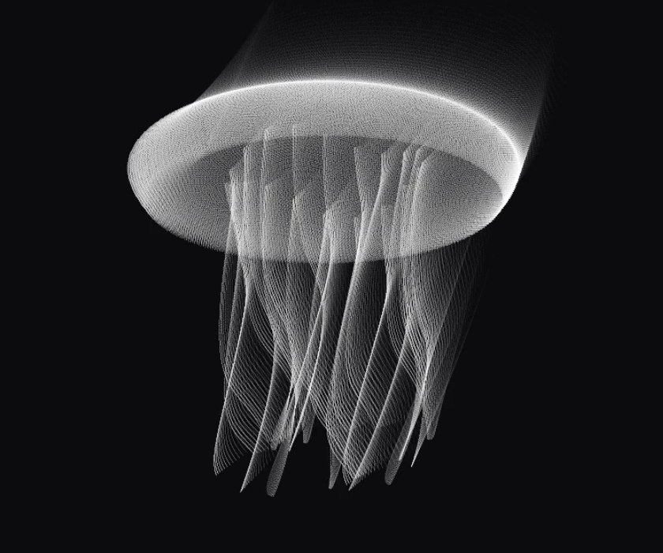
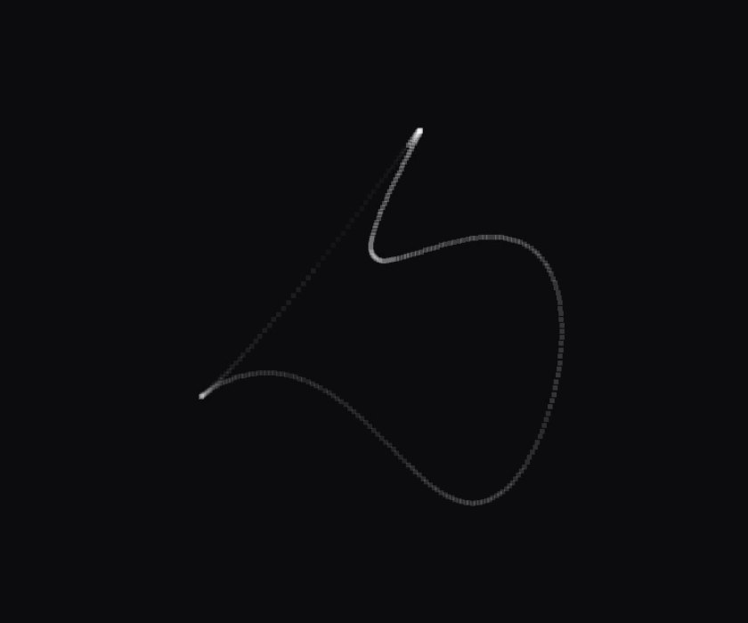
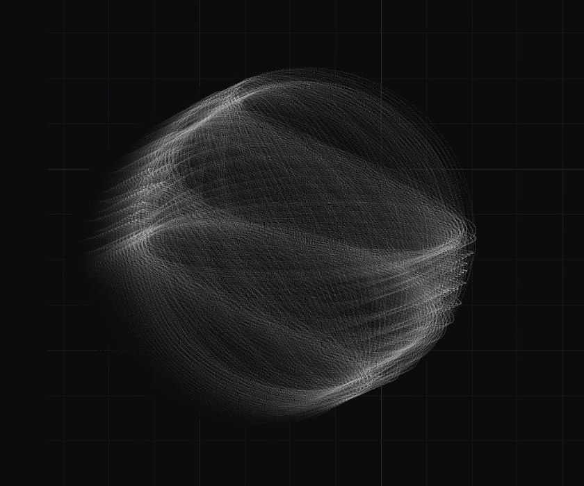
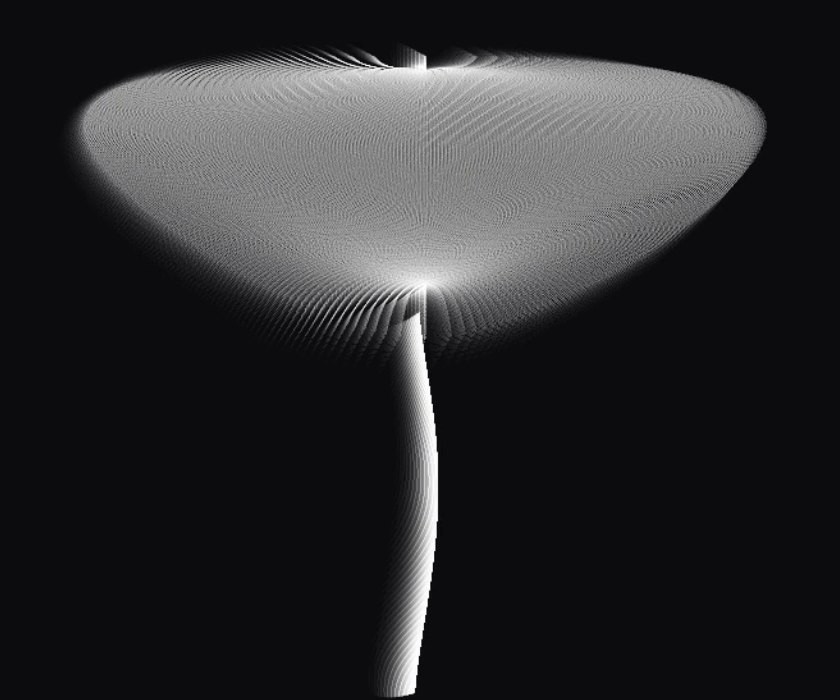

TOKOYO · Exhibitions and screenings
Exhibitions & screenings
TOKOYO is an interactive series of 49 mathematical observations by CHIERO. Each point follows an equation through time. Reducing the points changes what we see.




Work information
- Artist
- CHIERO
- Series
- TOKOYO / 常世
- Year
- 2026
- Media
- Custom software, mathematical equations, real-time point animation; optional sound derived from the points
- Interaction
- 40,000 → 625 → 40 → 1 point; restore, pause and inspect time
- Languages
- Japanese and English
Records
- O-FEST 2026 International Festival of Experimental ArtMoscow · Rouf Space / Video Art Programme #2Official Selection & ScreeningSource O-FEST film page ↗
- Published at chiero.jp/tokoyo/14 observations at launch, 49 nowPublishedSource Tokoyo ↗

- Short film
- TOKOYO
- Year
- 2026
- Length
- 3 min 34 sec (screening cut)
- Frame
- 16:9 · 1920×1080
- Sound
- Stereo, no dialogue
- Colour
- Black & white
- Equations, drawing, sound, editing
- CHIERO
Possible formats
Interactive installation
A display and a pointing or touch device. Agree on viewing distance, screen size, sound and an operating method before setup.
Screening
Discuss the version, duration, screen ratio, sound, credits and screening permission for the film separately from the interactive work.
Workshops
The public equation editor can be explored freely. A facilitated session, its audience, equipment and format can be discussed.
Preparing the venue
Check the actual venue computer and browser before installation. Network access, offline setup, operation hours, installation work and ongoing support are agreed individually. This page does not promise a fixed package or equipment rental.
About CHIERO
CHIERO is a Fukuoka-based creator whose practice connects conversation, publishing, art and everyday tools. In TOKOYO, equations, time and the viewer’s actions become a way to explore how forms appear.
Using the work
The public editor invites you to take and modify equations. Please contact CHIERO about exhibiting or commercially using the work’s images, films, sound or software package, and about the required credits.
Start a conversation
Please include the work, venue, dates, available equipment and any budget or format requirements.
Write an inquiry ↗info@chiero.jp